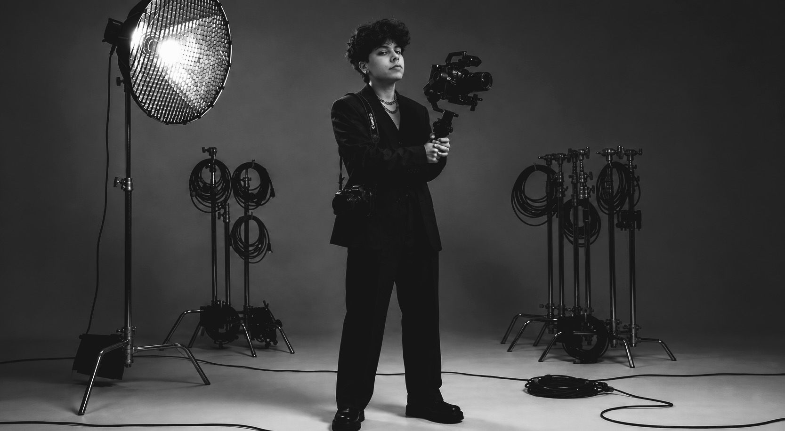

AÍLA
SORAYA
Videomaker & Filmmaker
Sou Aíla Soraya, videomaker e especialista em pós-produção audiovisual com foco em podcasts e conteúdo short-form de alta retenção. Minha trajetória é marcada pela versatilidade: domino a linguagem narrativa necessária para transformar gravações brutas em cortes magnéticos para redes sociais e episódios fluidos de podcast. Já colaborei com profissionais de múltiplos segmentos — desde o posicionamento de autoridade de psicólogos e terapeutas até a estética ágil de gamers, influencers e o setor de tecnologia. Cuido de todo o ecossistema de finalização: edição multicâmera, tratamento cinematográfico de cor, engenharia de áudio e motion graphics, entregando um produto final lapidado e pronto para tracionar em qualquer plataforma.

PORTFÓLIO
02
PRÉ-PRODUÇÃO & ESTRATÉGIA
Planejamento e preparação minuciosa para podcasts e canais de cortes. Desenvolvo a estrutura ideal e o roteiro estratégico para garantir que o conteúdo seja magnético antes mesmo de ligar os microfones.
PRODUÇÃO & CAPTAÇÃO
Captação audiovisual profissional com foco em mesas de podcast, talk-shows e conteúdos para internet, garantindo enquadramentos dinâmicos e áudio impecável no set.

PÓS-PRODUÇÃO & FINALIZAÇÃO
Onde a mágica acontece. Transformo gravações brutas em episódios fluidos e cortes altamente virais. Cuido desde a engenharia de áudio e sincronia multicâmera até o tratamento de cor e inserção de legendas dinâmicas.